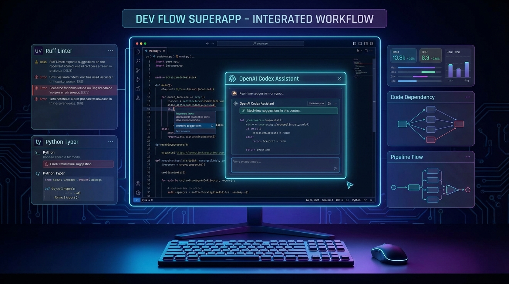

Sam Altman is done playing the humble researcher. OpenAI isn't just building AI anymore—it's building an empire. And the latest moves make that clearer than ever: 8,000 employees by year-end and the acquisition of Astral, one of the most respected developer tooling companies in the Python ecosystem.
This isn't incremental growth. This is transformation. The organization that started as a nonprofit research lab is rapidly becoming one of the largest and most strategically positioned technology companies on Earth. And if the rumored "superapp" materializes, we might be looking at the most significant reorganization of personal computing since the smartphone.
The Headcount Explosion
OpenAI currently employs roughly 4,000 people. The plan to reach 8,000 by the end of 2026 represents a doubling in less than two years. For context, that's approximately the same headcount as LinkedIn or Twitter at their peaks. It's larger than most Fortune 500 technology companies.
Where are all these people going? Sources suggest massive investments across several fronts: compute infrastructure scaling, international expansion, enterprise sales and support, safety research, and—most intriguingly—hardware and systems engineering. OpenAI is building the organizational capacity to operate at Google or Microsoft scale.
The hiring pace is aggressive even by Silicon Valley standards. Recruiters are reportedly offering compensation packages that make even Meta and Google look stingy. The message is clear: OpenAI is in a war for talent, and cost is no object.
The Astral Acquisition: More Than Meets the Eye
Now we come to the really interesting move. OpenAI is acquiring Astral, the company behind some of the most beloved developer tools in the Python ecosystem: uv (the blazing-fast Python package installer), Ruff (the Rust-powered Python linter that made flake8 and pylint look ancient), and ty (a typed Python toolkit).
On the surface, this looks like a straightforward talent and technology acquisition. Astral's team knows how to build performant, developer-friendly tools. Their Rust-based implementations demonstrate systems programming expertise that could be valuable for OpenAI's infrastructure challenges.

But the strategic implications run deeper. Astral's tools are already the default choice for an increasing percentage of Python developers. By owning this infrastructure, OpenAI gains insight into how developers work, what they build, and—crucially—direct channels to influence and integrate with the development workflows of millions of programmers.
More importantly, Astral's expertise in building fast, reliable, developer-centric tools is exactly what OpenAI needs to make Codex genuinely useful. The current iteration of Codex is impressive but often frustrating—slow, inconsistent, and prone to hallucinations that waste developer time. Astral's engineering culture could be the injection of craft that transforms Codex from a novelty into an essential tool.
The Superapp: ChatGPT + Atlas + Codex = ?
Here's where things get speculative but fascinating. Multiple sources indicate OpenAI is developing a desktop "superapp" that consolidates its three major consumer products into a unified experience: ChatGPT for conversation, Atlas (the unreleased agent product) for task execution, and Codex for software development.
The vision, as described by insiders, is ambitious: a single application that lives on your desktop and serves as an ambient intelligence layer across everything you do. Writing an email? The superapp helps. Coding? Codex is right there. Need to book a flight, schedule a meeting, or research a topic? Atlas handles it through natural language.
This isn't just another chat interface. The superapp concept reportedly includes deep OS integration—think Spotlight on steroids, but actually intelligent. It can see what you're working on, understand context across applications, and intervene proactively when useful.
The Competitive Landscape Shifts
If OpenAI successfully launches this superapp, the competitive dynamics of the entire industry change. Google has Search and Android. Microsoft has Windows and Office. Apple has... well, Apple has everything. But none of them have a coherent AI layer that works across their products in the way OpenAI is envisioning.
Microsoft, in particular, should be watching nervously. Their Copilot strategy is fragmented across dozens of products and experiences. OpenAI's superapp threatens to make that fragmentation look like a fatal weakness. Why use Copilot in Edge when you could use one unified AI that works everywhere?
The Astral acquisition feeds directly into this strategy. Developer tools are the beachhead. Get developers building in your ecosystem, and the rest follows. Visual Studio Code became the center of Microsoft's developer strategy not because it was the best editor, but because it created a platform. OpenAI seems to be learning from that playbook.
Growing Pains and Governance Questions
Not everything is smooth sailing. Doubling headcount in under two years creates enormous organizational challenges. Communication overhead explodes. Culture dilutes. The small-team agility that characterized OpenAI's early breakthroughs becomes impossible to maintain.
There's also the governance question. OpenAI's unusual corporate structure—the capped-profit subsidiary controlled by a nonprofit board—was already strained by the events of November 2023. Adding thousands of employees, billions in revenue, and major acquisitions to that structure creates friction that will eventually need resolution.
Sam Altman appears to be betting that velocity matters more than organizational elegance. Build first, sort out the structure later. It's a classic startup move, scaled to unprecedented dimensions.
What This Means for Developers
For the millions of developers who use Astral's tools, the acquisition raises immediate questions. Will uv, Ruff, and ty remain open source? Will they become OpenAI-specific integrations? Will the development pace accelerate or slow as the team gets absorbed into a much larger organization?
History suggests mixed outcomes. Sometimes acquisitions like this result in better-funded, faster-improving tools. Sometimes the acquired products stagnate or get shut down. Astral's founders have built trust through consistent delivery, but they're now part of a company with different incentives and pressures.
My prediction: the tools survive and improve, but gradually become more tightly integrated with OpenAI's broader ecosystem. The path of least resistance for Python developers will increasingly lead through OpenAI's garden.
8,000 employees. A developer tooling empire. A superapp that could redefine desktop computing. OpenAI isn't just building artificial intelligence anymore—it's building the infrastructure of an AI-centric future. The research lab phase is officially over.